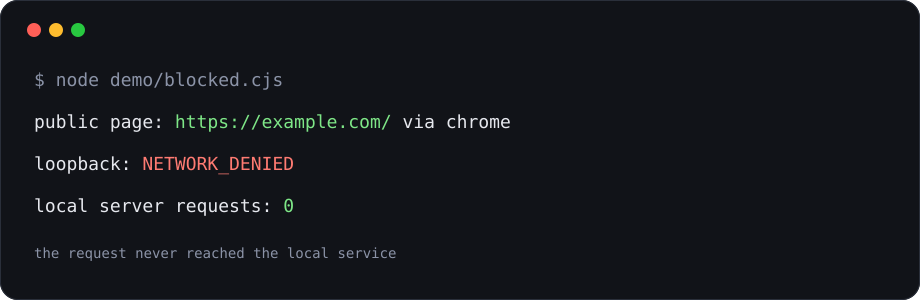

Browser Guard MCP gives a coding agent an isolated Chromium session with public-only navigation, explicit capability profiles, one-use approval for secrets, and evidence that never leaves process memory.

Literal private, loopback, link-local, and special-use addresses are rejected before the browser starts. A loopback egress proxy checks DNS for redirects and subresources.
Nine router tools. No browser_evaluate, cookies, storage, tabs, network inspection, or screenshots.
Card, password, and one-time-code entry requires a native macOS confirmation bound to the origin, tool, and exact arguments.
Bounded snapshots and console output expire with the grant. The local ledger stores no URLs, page text, arguments, or confirmation IDs.
git clone https://github.com/alexandryasukaitisss-cmd/browser-guard-mcp.git cd browser-guard-mcp npm test npm install -g @playwright/mcp cp examples/config.example.json ~/.config/browser-guard-mcp/config.json node src/cli.cjs --check --config ~/.config/browser-guard-mcp/config.json
Then add the server to your MCP client. The full setup, tool list, and security boundary are in the README.
Chromium runs with the user's privileges. A browser-engine exploit is outside this design.
Sensitive-field detection is heuristic. Read the threat model before giving an agent real data.